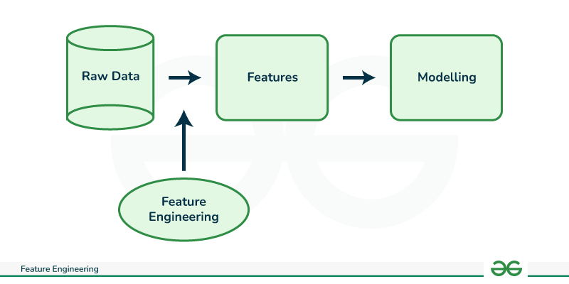
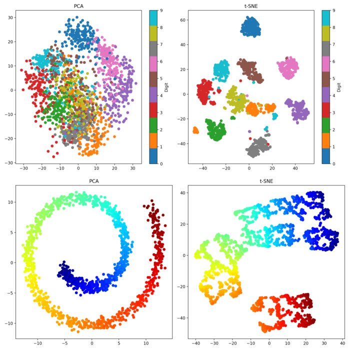
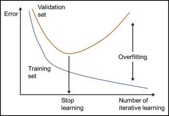
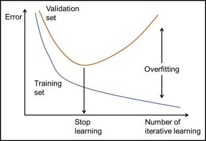
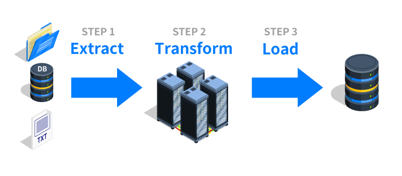
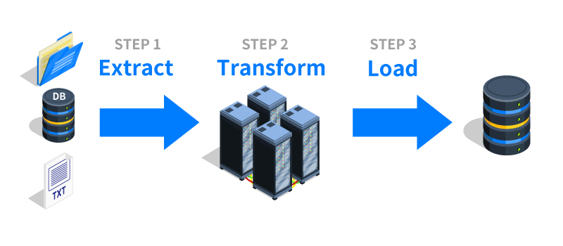
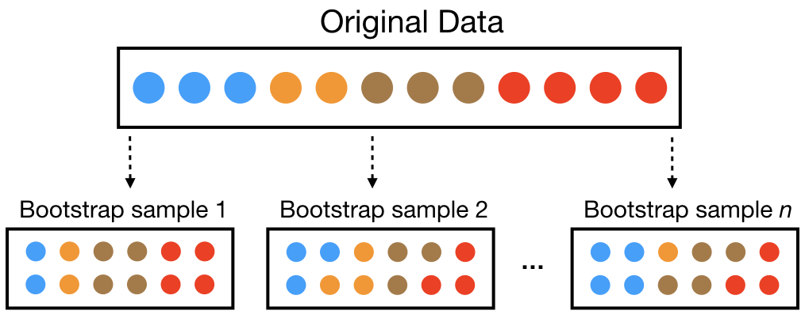
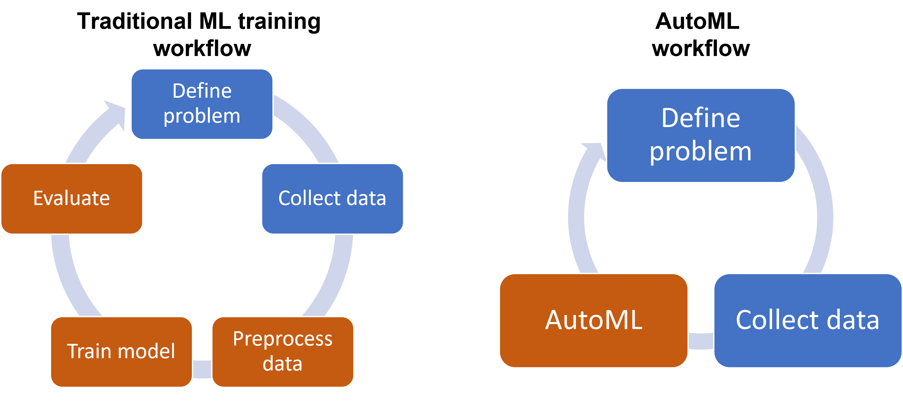

iPAS AI應用規劃師 考試重點
L21301 數據準備與模型選擇
主題分類
1
數據準備概述與流程
2
數據收集與探索性分析
3
數據清理技術
4
數據預處理技術
5
特徵工程
6
模型選擇基礎與考量
7
常見模型類型與適用場景
8
模型評估與選擇方法
#1
★★★★★
數據準備 (Data Preparation) 的重要性
核心概念
數據準備是機器學習專案中最關鍵且耗時的階段之一。俗話說「Garbage In, Garbage Out」，數據的品質直接決定了模型的性能上限。良好的數據準備可以顯著提升模型效果、穩定性和泛化能力。
#2
★★★★
數據準備的主要流程
典型步驟 (L21301, K11)
數據準備通常包含以下步驟：
- 數據收集 (Data Collection): 從各種來源獲取原始數據。
- 數據探索與理解 (Data Exploration & Understanding): 分析數據特性、分佈和潛在問題。
- 數據清理 (Data Cleaning): 處理缺失值、異常值、重複值、不一致數據等。
- 數據預處理/轉換 (Data Preprocessing/Transformation): 將數據轉換成適合模型訓練的格式，如數值化、標準化。
- 特徵工程 (Feature Engineering): 創建、選擇或轉換特徵，以提升模型性能。
- 數據集劃分 (Data Splitting): 將數據分為訓練集、驗證集和測試集。
#3
★★★
數據準備的迭代性
流程特性
數據準備並非嚴格的線性流程，通常需要根據數據探索的發現和模型訓練的反饋進行反覆調整和優化。例如，模型效果不佳可能需要回頭重新進行特徵工程或數據清理。
#4
★★★★
數據收集 (Data Collection)
獲取數據 (L21301, L22201, K11, S01)
從多種來源收集與問題相關的數據。來源可能包括：
- 內部資料庫/系統 (如 CRM, ERP)
- 公開數據集
- 網路爬蟲
- 感測器數據
- 第三方數據供應商
- 問卷調查/實驗
#5
★★★★
探索性數據分析 (EDA - Exploratory Data Analysis)
理解數據
EDA 的目的是初步理解數據的特性、分佈、關係和潛在問題。常用方法包括：
- 描述性統計 (Descriptive Statistics): 計算平均數、中位數、標準差、最大/最小值等 (L22101)。
- 數據視覺化 (Data Visualization): 繪製直方圖、散佈圖、箱型圖等，直觀展示數據分佈和關係 (L22303)。
- 檢查缺失值和異常值。
- 分析特徵之間的相關性。
#6
★★★
理解數據類型
數據特性
區分不同的數據類型對於選擇合適的處理方法和模型至關重要：
- 數值型數據 (Numerical Data):
- 連續型 (Continuous): 如身高、溫度。
- 離散型 (Discrete): 如購買次數、網頁點擊數。
- 類別型數據 (Categorical Data):
- 定類 (Nominal): 無序類別，如顏色（紅、藍、綠）。
- 定序 (Ordinal): 有序類別，如教育程度（高中、大學、碩士）。
- 其他類型：文本、圖像、時間序列等。
#7
★★★★★
處理缺失值 (Missing Values)
常見清理任務 (L21301, L22201, K11)
缺失值是真實世界數據中常見的問題。處理方法包括：
- 刪除 (Deletion): 直接刪除包含缺失值的樣本（行）或特徵（列）。適用於缺失比例小或該特徵不重要時，但可能損失資訊。
- 填充 (Imputation): 用估計值替換缺失值。常用方法：
- 平均數/中位數/眾數填充: 用該特徵的平均數（數值）、中位數（數值，對異常值穩健）或眾數（類別）填充。
- 回歸填充: 使用其他特徵預測缺失值。
- K-近鄰填充 (KNN Imputation): 使用與缺失樣本最相似的 K 個樣本的值來估計。
- 將缺失本身作為訊息: 對於某些情況，缺失本身可能是一種信號，可以創建一個指示變量標記是否缺失。
#8
★★★★
處理異常值/離群值 (Outliers)
常見清理任務 (K11)
異常值是指與數據集中大部分數據顯著不同的數據點。可能由測量錯誤、輸入錯誤或真實的極端情況引起。處理方法：
- 檢測方法: 基於統計（如 Z-score, IQR）、基於距離（如 KNN）、基於密度（如 DBSCAN）。
- 處理策略:
- 刪除: 直接移除異常值（需謹慎，可能損失訊息）。
- 替換/修正: 用較合理的值（如上限/下限值、平均數/中位數）替換。
- 保留: 如果確認是真實且重要的極端值，則保留。
- 使用對異常值穩健的模型。
#9
★★★
處理重複值 (Duplicates)
常見清理任務
識別並處理數據集中完全相同或幾乎相同的記錄。重複值可能導致模型評估偏差或訓練效率降低。通常的處理方式是直接刪除重複的記錄，只保留一份。
#10
★★★
處理不一致數據 (Inconsistent Data)
常見清理任務
指數據中存在邏輯矛盾或格式不統一的情況。例如，年齡為負數、同一類別有多種寫法（"男", "男性"）、單位不一致等。需要根據業務規則或常識進行修正或統一化。
#11
★★★★
特徵縮放 (Feature Scaling)
數值預處理 (L21301, K11)
將不同範圍的數值特徵縮放到相似的範圍內。這對於許多基於距離或梯度的演算法（如 KNN, SVM, 神經網路）非常重要，可以避免數值範圍大的特徵主導模型訓練，並加速收斂。常用方法：
- 標準化 (Standardization / Z-score): 將數據轉換為平均數為 0，標準差為 1 的分佈。公式: (x - mean) / std_dev。
- 正規化 (Normalization / Min-Max Scaling): 將數據縮放到 [0, 1] 或 [-1, 1] 的區間。公式: (x - min) / (max - min)。

#12
★★★★★
類別特徵編碼 (Categorical Feature Encoding)
類別預處理 (L21301, K11)
大多數機器學習模型只能處理數值數據，需要將類別特徵轉換為數值表示。常用方法：
- 標籤編碼 (Label Encoding): 為每個類別分配一個唯一的整數（如 0, 1, 2...）。適用於定序類別，但可能給模型帶來錯誤的大小關係暗示（對於定類不適用）。
- 獨熱編碼 (One-Hot Encoding): 為每個類別創建一個新的二元（0 或 1）特徵。優點是避免了大小關係暗示，適用於定類特徵。缺點是當類別數量很多時會導致維度急劇增加（維度災難）。
- 其他方法：二進制編碼 (Binary Encoding), 目標編碼 (Target Encoding) 等。


#13
★★★
數據集劃分 (Data Splitting)
模型評估基礎
將數據集劃分為獨立的子集，用於不同的目的：
- 訓練集 (Training Set): 用於訓練模型，讓模型學習數據中的模式。
- 驗證集 (Validation Set): 用於調整模型超參數（如學習率、正規化強度）和選擇最佳模型。
- 測試集 (Test Set): 在模型訓練和超參數調整完成後，用於最終評估模型在未見數據上的泛化性能。測試集絕對不能用於訓練或調優。

#14
★★★★
處理類別不平衡 (Class Imbalance)
數據分佈問題
當數據集中不同類別的樣本數量差異很大時（例如，欺詐檢測中，欺詐樣本遠少於正常樣本），會出現類別不平衡問題。這可能導致模型傾向於預測多數類，而忽略少數類。處理方法：
- 重採樣 (Resampling):
- 過採樣 (Oversampling): 複製少數類樣本或生成合成樣本（如 SMOTE - Synthetic Minority Over-sampling Technique）。
- 欠採樣 (Undersampling): 隨機刪除多數類樣本。
- 調整類別權重 (Class Weighting): 在模型訓練時，為少數類樣本賦予更高的權重（損失）。
- 使用合適的評估指標: 避免使用準確率，改用 Precision, Recall, F1-Score, AUC 等。
#15
★★★★★
特徵工程 (Feature Engineering)
核心概念 (L21301, L23301, K11)
利用領域知識和數據洞察，對原始數據進行轉換、組合或創建新的特徵，以提高機器學習模型的性能。好的特徵工程往往比選擇複雜模型更重要。是數據準備中的關鍵環節。

#16
★★★★
特徵創建 (Feature Creation)
生成新特徵
根據現有特徵創建新的、可能更有預測力的特徵。例如：
- 從日期時間中提取年、月、日、星期、小時等。
- 計算不同數值特徵之間的比例、差值、乘積。
- 將多個類別特徵組合創建交互特徵。
- 對文本數據進行 TF-IDF 計算或詞嵌入 (Word Embedding)。
#17
★★★★
特徵選擇 (Feature Selection)
篩選重要特徵
從所有特徵中選擇與目標變量最相關的子集。目的：
- 降低模型複雜度，減少過擬合風險。
- 減少訓練時間。
- 提高模型可解釋性。
- 過濾法 (Filter Methods): 基於統計指標（如相關係數、卡方檢驗）評估特徵重要性，獨立於模型。
- 包裹法 (Wrapper Methods): 將特徵選擇視為搜索問題，用模型性能作為評估標準（如遞迴特徵消除 RFE）。
- 嵌入法 (Embedded Methods): 在模型訓練過程中自動進行特徵選擇（如 Lasso 回歸）。
#18
★★★
降維 (Dimensionality Reduction)
減少特徵數量
在高維數據中，通過保留大部分資訊的同時減少特徵數量。目的類似於特徵選擇，但通常是創建新的、較少數量的組合特徵。常用方法：
- 主成分分析 (PCA - Principal Component Analysis): 線性降維方法，尋找數據方差最大的方向（主成分）。
- 線性判別分析 (LDA - Linear Discriminant Analysis): 有監督的線性降維方法，尋找最有利於分類的方向。
- t-分佈隨機鄰域嵌入 (t-SNE): 非線性降維方法，主要用於高維數據視覺化。



#19
★★★★★
模型選擇 (Model Selection) 的目標
核心任務 (L21301)
根據特定的問題、數據特性和業務需求，從眾多可用的機器學習演算法中，選擇最適合的模型。目標是找到一個在未見數據上具有良好泛化性能的模型。
#20
★★★★★
模型選擇的關鍵考量因素
決策依據 (K11)
- 問題類型: 是分類、回歸、聚類、降維還是其他任務？
- 數據特性: 數據量大小、特徵維度、數據類型（數值/類別）、線性/非線性關係、是否有異常值、類別是否平衡。
- 性能要求: 對準確率、速度、延遲的要求如何？
- 可解釋性需求: 是否需要理解模型的決策過程？（例如，線性模型通常比深度學習模型更易解釋）。
- 訓練時間與計算資源: 是否有足夠的時間和計算資源來訓練複雜模型？
- 模型複雜度 vs. 過擬合風險: 更複雜的模型可能性能更好，但也更容易過擬合。
#21
★★★★
不同模型的優缺點 (Pros and Cons)
模型比較 (L21301)
理解不同類型模型的內在特性、優點和缺點是做出明智選擇的基礎。例如：
- 線性模型: 簡單、快速、易解釋，但難以捕捉非線性關係。
- 決策樹: 易解釋，能處理數值和類別特徵，但容易過擬合。
- SVM: 在高維空間和非線性問題上表現良好，但對參數選擇和核函數敏感，計算成本高。
- 集成模型 (如 Random Forest, Gradient Boosting): 通常性能強大、不易過擬合，但可解釋性較差。
- 神經網路/深度學習: 能學習複雜模式、自動進行特徵提取，但需要大量數據和計算資源，可解釋性差。
#22
★★★
奧卡姆剃刀 (Occam's Razor) 原則
簡約原則
在多個性能相近的模型中，應優先選擇結構最簡單的模型。更簡單的模型通常更易於理解、解釋和維護，且泛化能力可能更好。

#23
★★★★
監督式學習 (Supervised Learning) 模型
常用模型
用於有標籤數據的學習任務。
- 分類 (Classification): 預測離散類別標籤。
- 邏輯回歸 (Logistic Regression)
- 支持向量機 (SVM - Support Vector Machine)
- 決策樹 (Decision Tree)
- 隨機森林 (Random Forest)
- 梯度提升機 (Gradient Boosting Machine, GBM), 如 XGBoost, LightGBM
- 神經網路 (NN) / 卷積神經網路 (CNN) (圖像)
- 回歸 (Regression): 預測連續數值。
- 線性回歸 (Linear Regression)
- SVM 回歸 (SVR)
- 決策樹回歸
- 隨機森林回歸
- 梯度提升回歸
- 神經網路
#24
★★★★
非監督式學習 (Unsupervised Learning) 模型
常用模型
用於無標籤數據的學習任務，旨在發現數據中的結構或模式。
- 聚類 (Clustering): 將相似的數據點分組。
- K-平均數 (K-Means)
- 層次聚類 (Hierarchical Clustering)
- DBSCAN (Density-Based Spatial Clustering of Applications with Noise)
- 降維 (Dimensionality Reduction): 減少數據的特徵數量。
- PCA
- t-SNE
- 關聯規則學習 (Association Rule Learning): 發現數據項之間的關聯性（如購物籃分析中的 Apriori 演算法）。
#25
★★★
集成學習 (Ensemble Learning)
組合模型
結合多個基學習器（通常是決策樹）的預測結果來獲得比單個學習器更好、更穩定的性能。主要方法：
- Bagging (Bootstrap Aggregating): 如隨機森林 (Random Forest)，並行訓練多個基學習器，結果取平均或投票。
- Boosting: 如梯度提升機 (GBM), AdaBoost，串行訓練基學習器，後續模型重點關注前面模型預測錯誤的樣本。

#26
★★★
深度學習 (Deep Learning) 模型
神經網路應用
基於多層神經網路的模型，擅長處理複雜的模式和非結構化數據。
- 卷積神經網路 (CNN): 主要用於圖像相關任務（分類、偵測、分割）。
- 循環神經網路 (RNN - Recurrent Neural Network) / LSTM / GRU: 主要用於序列數據（文本、時間序列）。
- Transformer: 在自然語言處理 (NLP) 領域取得巨大成功，也應用於視覺等領域。
- 生成對抗網路 (GAN) / 變分自動編碼器 (VAE) / 擴散模型: 用於生成式任務。
#27
★★★★★
選擇合適的評估指標 (Evaluation Metrics)
性能衡量標準 (L23303)
根據具體的業務目標和問題類型選擇最能反映模型真實性能的指標。
- 分類任務: Accuracy, Precision, Recall, F1-Score, AUC (Area Under the ROC Curve), Confusion Matrix。注意類別不平衡時 Accuracy 的局限性。
- 回歸任務: MSE (Mean Squared Error), RMSE (Root Mean Squared Error), MAE (Mean Absolute Error), R-squared。
- 聚類任務: 輪廓係數 (Silhouette Score), Davies-Bouldin Index (內部指標), ARI (Adjusted Rand Index) (外部指標，需有真實標籤)。
- 物件偵測任務: mAP, IoU。
#28
★★★★★
交叉驗證 (Cross-Validation)
穩健評估方法 (L23303)
為了更可靠地評估模型性能並選擇超參數，尤其是在數據量有限時，使用交叉驗證。最常用的是 K-摺交叉驗證 (K-Fold Cross-Validation):
- 將訓練數據隨機分成 K 個互斥的子集（摺）。
- 進行 K 輪訓練和評估：每輪選擇其中一摺作為驗證集，其餘 K-1 摺作為訓練集。
- 最終將 K 輪的評估結果平均，作為模型的整體性能估計。

#29
★★★★
超參數調優 (Hyperparameter Tuning)
模型優化 (L23304)
尋找模型最佳超參數組合的過程。常用方法：
- 網格搜索 (Grid Search): 嘗試所有預先定義的超參數組合，找到性能最佳的組合。計算成本高。
- 隨機搜索 (Random Search): 在指定的範圍內隨機抽樣超參數組合進行嘗試。通常比網格搜索更高效。
- 貝葉斯優化 (Bayesian Optimization): 利用先前的評估結果來指導後續的超參數選擇，試圖更快地找到最優組合。

#30
★★★
模型選擇中的偏差-方差權衡 (Bias-Variance Tradeoff)
理論基礎
模型預測誤差可以分解為偏差、方差和不可避免的誤差。
- 偏差 (Bias): 模型預測值與真實值之間的差異，高偏差表示欠擬合。
- 方差 (Variance): 模型對訓練數據微小變化的敏感度，高方差表示過擬合。
#31
★★
數據準備的工具與平台
常用工具 (L22203)
常用的數據準備工具和函式庫包括：Python (主導語言), Pandas (數據處理), NumPy (數值計算), Scikit-learn (預處理、特徵工程、模型選擇), Matplotlib/Seaborn (視覺化)。
#32
★★
數據抽樣 (Data Sampling)
數據選擇
當數據量過大時，可能需要從原始數據中抽取一部分樣本進行分析或模型訓練。常用的抽樣方法有簡單隨機抽樣、分層抽樣（保持類別比例）、系統抽樣等。需確保抽取的樣本能代表整體數據。
#33
★★
數據驗證 (Data Validation)
品質確保
建立規則或檢查機制來驗證數據的品質和一致性。例如，檢查數值是否在合理範圍內、類別是否為預期值、數據格式是否正確等。
#34
★★
時間序列數據的預處理
特殊數據處理
時間序列數據具有時間依賴性，預處理可能包括填充缺失時間點、平滑處理、差分（使序列平穩）、提取時間窗口特徵等。劃分訓練/驗證/測試集時不能隨機打亂，需按時間順序劃分。
#35
★★★
自動特徵工程 (AutoFE)
自動化趨勢
利用演算法自動探索和生成新的候選特徵。雖然還處於發展階段，但可以減輕手動特徵工程的負擔，尤其在複雜數據上可能發現人類難以想到的有效特徵。
#36
★★
考量模型的訓練效率
速度考量
不同的模型訓練所需的時間和計算資源差異很大。在模型選擇時，需根據可用的硬體資源和專案時程要求，評估備選模型的訓練效率。
#37
★★
半監督學習 (Semi-supervised Learning) 模型
混合數據學習
介於監督式和非監督式學習之間，利用少量有標籤數據和大量無標籤數據進行學習。適用於標註成本高昂但無標籤數據豐富的場景。
#38
★★★
模型可部署性 (Deployability)
部署考量
模型選擇不僅要看性能，還要考慮模型是否容易部署到目標環境（雲端、邊緣設備）。包括模型大小、依賴庫、與現有系統的兼容性等。
#39
★★
數據生命週期管理
數據管理
建立管理數據從產生到銷毀整個過程的策略和流程，包括數據儲存、備份、版本控制、訪問權限、安全性和合規性。
#40
★
數據清洗中的正則表達式 (Regex)
文本處理
正則表達式是處理和匹配文本模式的強大工具，常用於清洗非結構化文本數據中的特定格式或提取訊息。
#41
★★
領域知識 (Domain Knowledge) 的重要性
專業背景
深入理解應用領域的知識對於數據準備（尤其是特徵工程）和模型選擇至關重要。領域知識有助於判斷數據的意義、識別關鍵特徵、選擇合適的模型假設。
#42
★★
避免數據洩漏 (Data Leakage)
評估陷阱
指在模型訓練過程中無意中引入了測試集或未來數據的資訊，導致模型性能被高估。例如，在劃分數據集之前進行了基於整體數據的標準化或特徵選擇。
#43
★★★
學習曲線 (Learning Curves)
診斷工具
繪製模型在訓練集和驗證集上的性能（如誤差或準確率）隨訓練樣本數量變化的曲線。學習曲線可以幫助診斷模型是否存在高偏差（欠擬合）或高方差（過擬合）問題。


#44
★
ETL 流程 (Extract, Transform, Load)
數據整合
指從多個數據源提取 (Extract) 數據，進行清洗和轉換 (Transform)，然後載入 (Load) 到目標數據倉庫或數據湖的過程。是構建數據基礎設施和準備分析數據的常用流程。


#45
★
特徵哈希 (Feature Hashing)
高維類別處理
一種處理高基數（類別數量極多）類別特徵的技術，通過哈希函數將類別映射到一個固定維度的向量，避免了 One-Hot 編碼的維度爆炸問題，但可能產生哈希碰撞。

#46
★
強化學習 (RL - Reinforcement Learning)
不同學習範式
雖然本單元主要關注監督和非監督學習的模型選擇，但了解強化學習是 AI 的另一重要分支。RL 讓智能體 (Agent) 在與環境互動中學習，通過最大化累積獎勵 (Reward) 來優化其策略 (Policy)。適用於遊戲、機器人控制等順序決策問題。

#47
★★
模型選擇的陷阱：在測試集上調優
常見錯誤
絕對不能使用測試集來進行模型選擇或超參數調優。這樣做會導致模型對測試集過擬合，使得最終報告的模型性能評估過於樂觀，無法反映模型在真實未見數據上的表現。應使用獨立的驗證集或交叉驗證。
#48
★★
數據審計 (Data Auditing)
數據治理
對數據收集、處理、儲存和使用的流程進行審查，以確保其符合內部政策、法規要求和品質標準。
#49
★
數據漂移 (Data Drift)
數據變化
指生產環境中的數據統計特性隨時間發生變化，與訓練數據產生差異。這是導致模型漂移 (Model Drift) 的主要原因之一。需要監控數據漂移並觸發模型重新訓練。

#50
★★
特徵重要性 (Feature Importance)
特徵理解
評估不同特徵對模型預測結果的貢獻程度。有助於特徵選擇、模型解釋和理解業務驅動因素。可通過模型內建屬性（如樹模型的 feature_importances_）或 SHAP, LIME 等方法獲得。
#51
★
無免費午餐定理 (No Free Lunch Theorem)
模型選擇理論
該定理指出，沒有任何一種機器學習演算法能在所有可能的數據集和問題上都表現最佳。因此，模型選擇需要根據具體問題和數據進行實驗和評估。
#52
★★
ROC 曲線與 AUC
分類評估
ROC (Receiver Operating Characteristic) 曲線以偽陽性率 (FPR) 為橫軸，真陽性率 (TPR, Recall) 為縱軸，繪製不同分類閾值下的點。曲線下面積 AUC (Area Under the Curve) 是衡量模型整體分類性能的常用指標，值越接近 1 越好。

#53
★
元數據管理 (Metadata Management)
數據描述
管理描述數據的數據（元數據），例如數據來源、定義、格式、品質規則、血緣關係等。良好的元數據管理有助於數據的發現、理解和治理。
#54
★
數據脫敏 (Data Masking/Anonymization)
隱私保護
對數據中的敏感資訊（如姓名、身分證號）進行替換、遮蔽或加密處理，以保護個人隱私，同時盡量保留數據的可用性。
#55
★
特徵交叉 (Feature Crossing)
創建交互特徵
通過組合（通常是相乘或笛卡爾積）兩個或多個原始特徵來創建新的特徵，以捕捉特徵之間的非線性交互作用。常用於線性模型或淺層模型。

#56
★
樸素貝葉斯 (Naive Bayes)
機率分類器
基於貝葉斯定理和特徵條件獨立假設的分類演算法。簡單、快速，尤其在文本分類任務中表現良好。
#57
★
自助法 (Bootstrap)
重採樣技術
一種從原始數據集中有放回地重複抽樣，以生成多個模擬樣本集的技術。常用於估計統計量的穩定性（如標準誤、信賴區間）和 Bagging 等集成學習方法中。
#58
★
數據增強 (Data Augmentation)
擴充數據
在數據準備階段，通過對現有數據（尤其是圖像、文本）進行微小的、合理的變換來人工生成更多樣化的訓練樣本，以擴充數據集、提高模型泛化能力、減少過擬合。
#59
★
自動機器學習 (AutoML)
自動化流程
旨在自動化機器學習流程中的部分或全部環節，包括數據預處理、特徵工程、模型選擇和超參數調優。可以降低 AI 應用的門檻，提高開發效率。
#60
★
A/B 測試在模型選擇中的應用
線上評估
在模型選擇的最後階段，可以將表現最好的幾個候選模型部署到線上進行 A/B 測試，直接比較它們在真實用戶流量下的實際業務指標（如點擊率、轉換率），作為最終模型選擇的依據。
沒有找到符合條件的重點。
↑